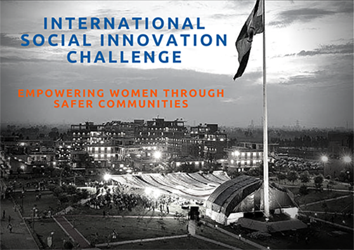

ISIC-15, A “collab-etiton” bringing together top students from India, Pakistan and the UK to design solutions to the pressing global social challenge of empowering women through safer communities.

About
Around the world the social enterprise movement is growing. Social enterprises have demonstrated how innovative new models can address our biggest social problems, while creating jobs and sustainable growth. Developing the social enterprise sector in India has the potential to transform millions of lives, and those of women in particular. ISIC-15 will bring together top students from India, Pakistan, and the UK to create positive social impact in India, and beyond, by designing scalable models for women's safety and empowerment.
FAQs
The participants are 30 competitively selected University students from India, Pakistan and the UK.
The 10-day event will include:
• Introduction to the basic principles of social innovation and entrepreneurship
• Social design workshops including issue immersion, ideation, prototyping and delivery phases
• Orientation to the Indian social enterprise landscape
• Cultural exchanges and immersions
• Introduction to use of digital channels and the web for social innovation
• Introduction to the basic principles of social innovation and entrepreneurship
• Social design workshops including issue immersion, ideation, prototyping and delivery phases
• Orientation to the Indian social enterprise landscape
• Cultural exchanges and immersions
• Introduction to use of digital channels and the web for social innovation
The dates are August 22nd - August 31st.